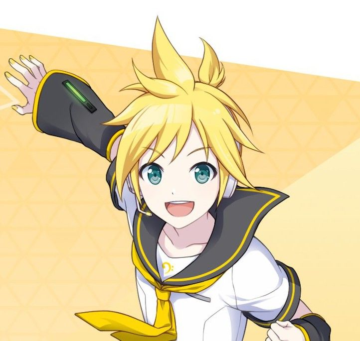

Kagamine Len - CV02
Kagamine Len (鏡音レン) adalah karakter VOCALOID yang dikembangkan oleh Crypton Future Media dan dirilis bersamaan dengan Kagamine Rin pada 27 Desember 2007 sebagai pasangan kembar atau cermin satu sama lain. Suaranya diisi oleh pengisi suara Jepang Asami Shimoda, sama seperti Rin, dan menggunakan mesin VOCALOID2. Len digambarkan sebagai remaja laki-laki berambut pirang pendek dengan gaya energik dan pakaian futuristik yang serasi dengan Rin. Karakter ini memiliki suara yang kuat, tajam, dan penuh semangat, menjadikannya cocok untuk genre musik rock, pop, techno, dan lagu-lagu dramatis.
Len sering ditampilkan dalam lagu-lagu duet bersama Rin, dengan berbagai peran mulai dari saudara kembar, pasangan, hingga tokoh berseberangan dalam cerita lagu seperti “Servant of Evil” dan “Synchronicity”. Beberapa lagu terkenalnya antara lain “Servant of Evil”, “Spice!”, “Fire◎Flower”, dan “Lost One’s Weeping”. Kagamine Len dikenal dan disukai karena suara khasnya, ekspresi emosional yang dalam, serta perannya dalam banyak cerita musik yang kompleks dan menyentuh
